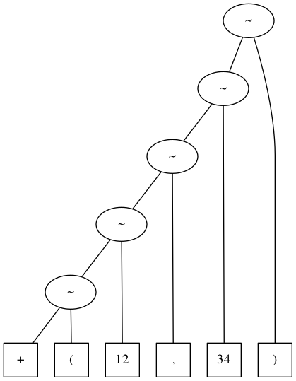
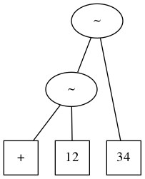

Introduction of Scala Programming Language
List and its Manipulation
Table of Contents
1 Overview
The goal of this subject is to study the parser combinator of Scala and the development of a calculator.
2 Regular Expressions
- Regular expressions of Scala is used to check that a string is matched to a given pattern.
- Note that, regular expressions correspond to regular languages in formal language theory, that is, finite automata.
- Reference (Wikipedia):
For instance, a regular expression w* (asterisk) represent a pattern that
iterates a character w \(n\) times (\(n \ge 0\)). It matches, an empty string, w, ww, www, wwww etc.
We can use it in Scala as follows.
scala> "www".matches("w*") res: Boolean = true scala> "vvv".matches("w*") res: Boolean = false
Similarly, a regular expression w+ (plus) represent a pattern that
iterates a character w \(n\) times (\(n \ge 1\)).
scala> "www".matches("w+") res: Boolean = true scala> "".matches("w+") res: Boolean = false
Let’s consider that there are several characters \(r_1, r_2, \cdots, r_n\).
We can represent it as \((r_1|r_2|\cdots|r_n)\).
For instance, (A|T|G|C)+ represents a pattern which iterates A or
T or G or C \(n\) times (\(n \ge 1\)).
scala> "ATTACCA".matches("(A|T|G|C)+") res: Boolean = true
The above example can be represented also by [ATGC]+.
\([c_1c_2\cdots c_n]\) represents a pattern that either one of
characters \(c_i\) matches to a given string.
scala> "ATTACCA".matches("[ATGC]+") res: Boolean = true
In a regular expression \([c_1c_2\cdots c_n]\),
suppose that we have characters with continuous character codes
such as [0123456789].
We can write it by using range like [0-9].
- Examples
[0-9]matches to one digit of decimal representation[0-9a-fA-F]matches to one digit of hexadecimal representation
scala> "2018".matches("[0-9]+") res: Boolean = true scala> "7E2".matches("[0-9a-fA-F]+") res: Boolean = true
Furthermore, [0-9] can be written as \d.
Here, “\” (back slash) is interpreted as an escape character in
Scala.
So, we need to write it with =“\\d”= (double back slashes).
Or, we can use another string representation with “”“ (triple double
quotes). It ignores escape characters and we can write =”“”\d“”“=.
scala> "2018".matches("\\d+") res: Boolean = true scala> "2018".matches("""\d+""") res: Boolean = true scala> "7E2".matches("""[\da-fA-F]+""") res: Boolean = true
In addition, \(r?\) matches \(r\) or the empty string.
For instance, -? matches a string - or the empty string.
So, we can use a regular expression -?\d+ to match to decimal
representation of integers (including negative integers).
scala> "-2018".matches("""-?\d+""") res: Boolean = true
There are various other ways in regular expressions but we ends it
here for a meanwhile.
Please check the other detail in the following web pages.
2.1 Exercise
- A regular expression
(A*|T*|G*|C*)matches to which kind of strings? Check it by trying several strings.- (answer example)
- empty string,
A,T,G,C,AA,TT,GG,CC,AAA,TTT,GGG,CCCetc.
- A regular expression
(A*|T*|G*|C*)+matches to which kind of strings? Check it by trying several strings.- (answer example)
- It matches to the same ones as a regular expression
(A|T|G|C)*.
- What does regular expression match to a non-empty string that has
both of the following two condititions (1) only consists of
A,T,G,C, (2) lengths are ones multiplied by 3 (e.g. 3, 6, 18, 123, 252 etc).- (answer example)
- For instance,
([ATGC][ATGC][ATGC])+matches. We can also use another way using \(\{m\}\) which represent the number of iterations, then it can be written as([ATGC]{3})+.
- A regular expression
\d+also matches to a redundant decimal representations like007— it has redundant prefix0. What regular expressions can be used to avoid it?- (answer example)
An expression
[1-9]\d*looks fine but it does not match to0.scala> "0".matches("""[1-9]\d*""") res: Boolean = false
We can fix it by using
(0|[1-9]\d*).scala> "0".matches("""(0|[1-9]\d*)""") res: Boolean = true
- A regular expression
-?\d+matches to ones have redundant prefix0and it also matches-0which is meaningless. What can we do to avoid this problem?- (answer example)
- We can avoid it by
(0|-?[1-9]\d*).
3 Context Free Languages and Extended Backus-Naur Form (EBNF)
Syntax, like ones used in calculator, can be defined by
by using context free languages which is a kind of formal grammar.
Extended Backus-Naur Form (EBNF), an extention of
Backus-Naur Form (BNF) is often used for a syntax defined by context free languages.
EBNF is sometimes called metalanguage because it is a
language defining object languages.
- References (Wikipedia):
EBNF has several variants though, here we define it as follows:
- terminal symbols (strings in object language):
we describe it with double quotations like
"a". - nonterminal symbols (symbols of EBNF): we descrive it by italic font like expression. It represents categories of syntax.
syntax rules: It is represented by the following form. It defines a string represented by nonterminal symbols.
\begin{align*} \mbox{Nonterminal symbols} & ::= \mbox{Definition} \end{align*}
We use the following forms in definitions.
| EBNF | Descriptions |
|---|---|
| \(\alpha_1\ \alpha_2\) | concatenation of \(\alpha_1\) and \(\alpha_2\) |
| \(\alpha_1 \mid \alpha_2\) | \(\alpha_1\) or \(\alpha_2\) |
| \(\{\ \alpha\ \}\) | \(n\) times iterations of \(\alpha\) (\(n \ge 0\)) |
| \([\ \,\alpha\ \,]\) | \(\alpha\) or empty |
| \((\ \alpha\ )\) | grouping \(\alpha\) |
For instance, the following EBNF defines
- a sytax category digit representing decimal digits and
- a syntax category integer representing integers of decimal representation.
4 Prefix Notation Calculator
4.1 Syntax Definition
At first, let’s consider a calculator of prefix notation which has a
comparatively easy syntax.
Prefix notation is a notation describing arithmetic operations like
+(x,y), -(x,y), *(x,y), /(x,y).
Using this notation, \(3+1-4*2\) is written by -(+(3,1),*(4,2)).
This syntax is defined by EBNF as follows.
\begin{align*} \textit{expr} & ::=\ \textit{integer}\ \mid\ \textit{func}\ \mbox{"("}\ \textit{expr}\ \mbox{","}\ \textit{expr}\ \mbox{")"} \\ \textit{func} & ::=\ \mbox{"+"}\ \mid\ \mbox{"-"}\ \mid\ \mbox{"*"}\ \mid\ \mbox{"/"} % \end{align*}
By using parser combinator in Scala, we can define our own
syntax by similar notations to EBNF and can parse it.
However, there is one limiation in the parser combinator in Scala.
Since it uses a top-down recursive descent parsing, we cannot use left
recursive syntax rules. But, in practice it is not so a problem
because we can find some workaround.
- Reference: scala.util.parsing.combinator.Parsers
- Reference: Programming in Scala, First Edition: 31. Combinator Parsing
- Reference: Wikipedia: Parser combinator
When we define a syntax using EBNF, it bothers to treat white spaces:
- we do not want to white spaces in a string seqnence of numbers
- but we want to allow white spaces before and after commas and parentheses.
The following is a precise definition using EBNF for the one including white spaces but it is not necessarily complex.
\begin{align*} \textit{expr} & ::=\ \textit{spaces}\ (\ \textit{integer}\ \mid\ \textit{func}\ \mbox{"("}\ \textit{expr}\ \mbox{","}\ \textit{expr}\ \mbox{")"}\ )\ \textit{spaces} \\ \textit{func} & ::=\ \textit{spaces}\ (\ \mbox{"+"}\ \mid\ \mbox{"-"}\ \mid\ \mbox{"*"}\ \mid\ \mbox{"/"}\ )\ \textit{spaces} \\ \textit{spaces} & ::=\ \{\ \mbox{" "}\ \} \end{align*}So, it is convenient to use a sytactic unit called token which do not allow white spaces in a middle of numbers and names of variables.
In scala.util.parsing.combinator.JavaTokenParsers, the following functions are already defined and we can use it as tokens.
| Function Name | Type of Tokens | Example |
|---|---|---|
ident |
identifier of variables | x, x1, Name etc |
wholeNumber |
integers | 12, -34 etc |
decimalNumber |
unsigned decimal | 12, 12.3, .14 etc |
floatingPointNumber |
floating-point number | 3.14, 6.02e23 etc |
stringLiteral |
string | ="abc"=, ="\\d"= etc |
Note that JavaTokenParsers is a subclass of scala.util.parsing.combinator.RegexParsers and we can create new token using regular expressions.
A program of defining a prefix notation calculator can be written as follows (CalcP0.scala).
import scala.util.parsing.combinator._ object CalcP0 extends JavaTokenParsers { def expr: Parser[Any] = integer | func ~ "(" ~ expr ~ "," ~ expr ~ ")" def func = "+" | "-" | "*" | "/" def integer = wholeNumber }
- Function expr is the parser (syntax analyzer) of prefix notation expressions.
- Function func is the parser of operators.
- Function integer is the parser of integers.
Note that, as is written in the definition of the function expr,
|is used for “or”- but
~is used for “concatenation”.
Other notations are written as follows.
We can see that notations of EBNF can be naturally written by the
parser combinator of Scala.
| Notations in Scala | Notations of EBNF | Descriptions |
|---|---|---|
| \(\alpha_1\) ~ \(\alpha_2\) | \(\alpha_1\ \alpha_2\) | Concatenation of \(\alpha_1\) and \(\alpha_2\) |
| \(\alpha_1 \mid \alpha_2\) | \(\alpha_1 \mid \alpha_2\) | \(\alpha_1\) or \(\alpha_2\) |
rep( \(\alpha\) ) |
\(\{\ \alpha\ \}\) | \(n\) times iteration of \(\alpha\) (\(n \ge 0\)) |
opt( \(\alpha\) ) |
\([\ \,\alpha\ \,]\) | \(\alpha\) or empty |
( \(\alpha\) ) |
\((\ \alpha\ )\) | grouping \(\alpha\) |
This program can be executed from Scala REPL
( NOTE: CalcP0.scala is necessarily saved in the same directory).
$ scala scala> :load CalcP0.scala
At first, write import command so that we can execute functions defined in the CalcP0 object.
scala> import CalcP0._
Note that, import command is necessary to be executed every time we load programs.
By using the fuction parseAll, we can execute parsing
for a given string. For instance, the following is the result of
parsing +(12,34) as expr.
scala> parseAll(expr, "+(12,34)")
res: CalcP0.ParseResult[Any] = [1.9] parsed: (((((+~()~12)~,)~34)~))
The meaning of the result is as follows:
[1.9]in the result represents that we can parse from the 1st character to the 9th character (that is the last character), and(((((+~()~12)~,)~34)~))is a string representation of a parse tree obtained by the parsing.
This representation looks difficult!! but it indeed has the following structure (can you understand?).
((((("+" ~ "(") ~ "12") ~ ",") ~ "34") ~ ")")
This can be drawn as the following syntax tree (also called syntactic tree). Here, tokens are represented as a square box.

For each token
"+",
"(",
"12",
",
"34",
")",
the binary operator "~" left-associatively created pairs.
But isn’t it too complex?
Because there are unnecessary tokens ( "(", ",",
")").
They consequently make the obtained syntax tree complex.
The parser combinator of Scala has an operation which remove
unnecessary structures.
So, there are two convenient operators:
- If we use an operator
"~>"instead of"~"then the left hand side result is removed from the syntax tree. - In case we use
"<~"then the right hand side result is removed from the syntax tree.
The following program CalcP1.scala removes unnecessary token from the
resulting syntax tree by using the operator "<~".
import scala.util.parsing.combinator._ object CalcP1 extends JavaTokenParsers { def expr: Parser[Any] = integer | (func <~ "(") ~ (expr <~ ",") ~ (expr <~ ")") def func = "+" | "-" | "*" | "/" def integer = wholeNumber }
We can execute it as follows.
$ scala scala> :load CalcP1.scala scala> import CalcP1._ scala> parseAll(expr, "+(12,34)") res: CalcP1.ParseResult[Any] = [1.9] parsed: ((+~12)~34)
The obtained result represents the following syntax tree.

4.2 Exercise
- Modify CalcP1.scala to be able to use floating point numbers instead of integers.
- (answer example)
For instance we can modify it as follows (CalcP1float.scala).
def expr: Parser[Any] = number | (func <~ "(") ~ (expr <~ ",") ~ (expr <~ ")") def func = "+" | "-" | "*" | "/" def number = floatingPointNumber
- Modify CalcP1.scala to be able to use one argument operation/function like “-(12)”= or =“abs(-34)”=.
- (answer example)
For instance we can modify it as follows (CalcP1unary.scala).
def expr: Parser[Any] = integer | (func1 <~ "(") ~ (expr <~ ")") | (func2 <~ "(") ~ (expr <~ ",") ~ (expr <~ ")") def func1 = "-" | ident def func2 = "+" | "-" | "*" | "/" | ident def integer = wholeNumber
Here, since we allow
identas the name of one argument function name, we can use not onlyabsbut also any indentifiers. And, we can also use any two arguments function names.
By using the following function
hexnum, we can use integers of Hexadecimal notation like#7E2as tokens.def hexnum = "#" ~> "[0-9a-fA-F]+".r
Modify CalcP1.scala to be able to use integers of Hexadecimal notations.
- (answer example)
For instance we can modify it like CalcP1hex.scala.
import scala.util.parsing.combinator._ object CalcP1hex extends JavaTokenParsers { def expr: Parser[Any] = integer | hexnum | (func <~ "(") ~ (expr <~ ",") ~ (expr <~ ")") def func = "+" | "-" | "*" | "/" def integer = wholeNumber def hexnum = "#" ~> "[0-9a-fA-F]+".r }
4.3 Use of the result of parsing
So far, we implemented a parser for formulas of prefix notations.
The parse combinator of Scala allow us to describe any process we want
after parsing.
From here, let’s implement a calculator by using this functionality.
Note that, here, we assume results of calculation are integers.
Calculators on floating point numbers will be an exercise lator.
How is the definition of expr in CalcP1.scala ? It is given as follows.
def expr: Parser[Any] = integer | (func <~ "(") ~ (expr <~ ",") ~ (expr <~ ")")
def FunctionName: Parser[Any] = Syntax Definition 1 | Syntax Definition 2 | ... | Syntax Definition n
In order to modify it to be able to return Int, a data type of integers in Scala, we need to describe the followings.
def FunctionName: Parser[Int] = Syntax Definition 1 ^^ Function 1 returning Int | Syntax Definition 2 ^^ Function 2 returning Int | ... Syntax Definition n ^^ Function n returning Int |
Here, “ Function i returning Int” means a function which has
- the results of parsing “ Syntax Definition i” as input arguments and
- return the result of calculation as Int type.
“ Syntax Definition 1” of expr is integer, and it returns
a string sequence as a result of parsing.
So, the remaining task for “ Function 1 returning Int”
is to implement a function which has
- a string representation of decimal integers as input arguments and
- returns a Int value from it
In other words, a function of String => Int in Scala.
By using anonymous functions of Scala, the function converting a string representation of decimal integers to its value would be the followings:
(s => s.toInt){ s => s.toInt }(_.toInt){ _.toInt }
That is, we can write it as follows.
def expr: Parser[Int] = integer ^^ { _.toInt } | (func <~ "(") ~ (expr <~ ",") ~ (expr <~ ")") ^^ { t => ... }
“ Syntax Definition 2” of expr is
(func <~ "(") ~ (expr <~ ",") ~ (expr <~ ")")
and it returns a structure like (("+" ~ 12) ~ 34) whose data type is
~[~[String,Int],Int]. Remember the syntax tree of it:
- 1st element of
(x ~ y)is obtained by the method._1 - 2nd element is obtained by the method
._2.
That is, when the value of t is (("+" ~ 12) ~ 34), then we can
obtain 12 by t._1._2 and obtain 34 by t._2. Because,
- 12 is the 2nd element of the 1st element of
t - 34 is the 2nd element of
t
A bit complex? In such a complex case, we can use switch expression of Scala.
t match { case pattern 1 => process 1 case pattern 2 => process 2 ... case pattern n => process n }
In this example, pattern matching of the structure of t is executed
from pattern 1, and process i is executed for the first pattern i
matched to the structure of t.
A pattern for “ Syntax Definition 2” of expr
(func <~ "(") ~ (expr <~ ",") ~ (expr <~ ")")
can be written as f ~ x ~ y. Then, we can write it as follows.
def expr: Parser[Int] = integer ^^ { _.toInt } | (func <~ "(") ~ (expr <~ ",") ~ (expr <~ ")") ^^ { t => t match { case f ~ x ~ y => ... }}
Here, there is the following correspondence:
| Syntax Definition | Function Definition | Data Type |
|---|---|---|
| func | f | String |
| expr (1st one) | x | Int |
| expr (2nd one) | y | Int |
The expression func in the syntax definition is assigned to a variable f,
First expr is assigned to a variable x,
Second expr is assigned to a variable y.
Note that, the data type of f is String, the data type of x and
y are Int.
The value assigned to f is either
"+",
"-",
"*", or "/".
So, for readability, we can write 4 patterns as follows.
def expr: Parser[Int] = integer ^^ { _.toInt } | (func <~ "(") ~ (expr <~ ",") ~ (expr <~ ")") ^^ { t => t match { case "+" ~ x ~ y => ... case "-" ~ x ~ y => ... case "*" ~ x ~ y => ... case "/" ~ x ~ y => ... }}
In addition, we can write { t => t match { ... } } as simply { ... }.
def expr: Parser[Int] = integer ^^ { _.toInt } | (func <~ "(") ~ (expr <~ ",") ~ (expr <~ ")") ^^ { case "+" ~ x ~ y => ... case "-" ~ x ~ y => ... case "*" ~ x ~ y => ... case "/" ~ x ~ y => ... }
The following program is obtaned after we add process of calculating values for each arithmetic operations. (CalcP2.scala)．
import scala.util.parsing.combinator._ object CalcP2 extends JavaTokenParsers { def expr: Parser[Int] = integer ^^ { _.toInt } | (func <~ "(") ~ (expr <~ ",") ~ (expr <~ ")") ^^ { case "+" ~ x ~ y => x + y case "-" ~ x ~ y => x - y case "*" ~ x ~ y => x * y case "/" ~ x ~ y => x / y } def func = "+" | "-" | "*" | "/" def integer = wholeNumber }
The following is an example of execution.
scala> :load CalcP2.scala scala> import CalcP2._ scala> parseAll(expr, "+(*(1,2), *(3,4))") res: CalcP2.ParseResult[Int] = [1.18] parsed: 14
4.4 Exercise
- Modify CalcP2.scala to be able to use floating point numbers
instead of integers. Note that the data type of the result
becomes
Double.- (answer example)
For instance, we can modify it like CalcP2float.scala.
import scala.util.parsing.combinator._ object CalcP2float extends JavaTokenParsers { def expr: Parser[Double] = number ^^ { _.toDouble } | (func <~ "(") ~ (expr <~ ",") ~ (expr <~ ")") ^^ { case "+" ~ x ~ y => x + y case "-" ~ x ~ y => x - y case "*" ~ x ~ y => x * y case "/" ~ x ~ y => x / y } def func = "+" | "-" | "*" | "/" def number = floatingPointNumber }
- Further modify CalcP2.scala to be able to use more operations
like
"-(0.1)","abs(-2.3)","max(4, 5)". Note that we assume that those process can be implemented asmath.abs(-2.3),math.max((4, 5). Refer scala.math package to check available functions.- (answer example)
For instance, we can modify it like CalcP2float2.scala.
import scala.util.parsing.combinator._ object CalcP2float2 extends JavaTokenParsers { def expr: Parser[Double] = number ^^ { _.toDouble } | (func1 <~ "(") ~ (expr <~ ")") ^^ { case "-" ~ x => - x case "abs" ~ x => math.abs(x) } | (func2 <~ "(") ~ (expr <~ ",") ~ (expr <~ ")") ^^ { case "+" ~ x ~ y => x + y case "-" ~ x ~ y => x - y case "*" ~ x ~ y => x * y case "/" ~ x ~ y => x / y case "max" ~ x ~ y => math.max(x, y) } def func1 = "-" | ident def func2 = "+" | "-" | "*" | "/" | ident def number = floatingPointNumber }
4.5 Extension for multiple arguments.
Let’s extend the current program to allow to have multiple arguments
like
+(x_1, x_2, ..., x_n) (\(n \ge 1\)).
This syntax can be defined by EBNF as follows.
Here, \(\{\ \alpha\ \}\) represents \(n\) time iterations of \(\alpha\) (\(n \ge 0\)).
Using the parser combinator of Scala, it can be written as follows. (CalcP3.scala)．
import scala.util.parsing.combinator._ object CalcP3 extends JavaTokenParsers { def expr: Parser[Any] = integer | (func <~ "(") ~ expr ~ (rep("," ~> expr) <~ ")") def func = "+" | "-" | "*" | "/" | ident def integer = wholeNumber }
The expression rep("," ~> expr) corresponds to \(\{\ \mbox{","}\ \textit{expr}\ \}\).
Also, we add ident to the definition of func to be able to use any
identifiers as function names.
We obtain the following results when execute this program for +(1,2,3,4).
scala> :load CalcP3.scala scala> import CalcP3._ scala> parseAll(expr, "+(1,2,3,4)") res: CalcP3.ParseResult[Any] = [1.11] parsed: ((+~1)~List(2, 3, 4))
The result for the part of rep("," ~> expr) becomes a list of integers List(2,3,4).
So, we can write the program for calculating the result of integers as follows.
def expr: Parser[Int] = integer ^^ { _.toInt } | (func <~ "(") ~ expr ~ (rep("," ~> expr) <~ ")") ^^ { case "+" ~ x ~ ys => ... case "-" ~ x ~ ys => ... case "*" ~ x ~ ys => ... case "/" ~ x ~ ys => ... }
In case of +(1,2,3,4),
- an integer
1is assigned to a variablex, - a list of integers
List(2,3,4)is assigned to a variableys.
So, we can calculate the result by x + ys.sum.
Also, (x +: ys).sum is fine.
In case of -(1,2,3,4), representing \(1-2-3-4\),
the result is calculated as x - ys.sum.
In case of *(1,2,3,4), representing \(1\times 2\times 3\times 4\),
the result is calculated as x * ys.product.
Similarly, /(1,2,3,4) is calculated as x / ys.product.
However, a problem happens when we have only one argument.
The results of +(1), -(1), *(1), /(1) are all 1.
It is fine for +, *, /.
But -1 should be returned in case -(1).
It is resolved by writing a program as follows. (CalcP4.scala)．
import scala.util.parsing.combinator._ object CalcP4 extends JavaTokenParsers { def expr: Parser[Int] = integer ^^ { _.toInt } | (func <~ "(") ~ expr ~ (rep("," ~> expr) <~ ")") ^^ { case "+" ~ x ~ ys => x + ys.sum case "-" ~ x ~ Nil => - x case "-" ~ x ~ ys => x - ys.sum case "*" ~ x ~ ys => x * ys.product case "/" ~ x ~ ys => x / ys.product } def func = "+" | "-" | "*" | "/" | ident def integer = wholeNumber }
In this program, a case pattern matching when the part of ys is
Nil is added.
4.6 Exercise
- What is happen when we run CalcP4.scala with
parseAll(expr, "abs(-1)")?- (answer example)
- Parising goes well but we will have
scala.MatchErrorwhile calculation because there is no pattern matched toabs(x).
- Modify CalcP4.scala to be able to use
abs(x)which returns the absolute value ofx.- (answer example)
We can do that by adding the following line.
case "abs" ~ x ~ Nil => math.abs(x)
- Modify CalcP4.scala to be able to get the result as
BigIntinstead ofInt. In addition, implementfact(x)which returns the factorial ofx. Note that we can translate a stringsrepresenting a decimal integer by usingBigInt(s).- (answer example)
For instance, we can modify it as CalcP4bigint.scala.
import scala.util.parsing.combinator._ object CalcP4bigint extends JavaTokenParsers { def expr: Parser[BigInt] = integer ^^ { BigInt(_) } | (func <~ "(") ~ expr ~ (rep("," ~> expr) <~ ")") ^^ { case "+" ~ x ~ ys => x + ys.sum case "-" ~ x ~ Nil => - x case "-" ~ x ~ ys => x - ys.sum case "*" ~ x ~ ys => x * ys.product case "/" ~ x ~ ys => x / ys.product case "fact" ~ x ~ Nil => (BigInt(1) to x).product } def func = "+" | "-" | "*" | "/" | ident def integer = wholeNumber }
5 Other Working Materials
Modify Work1.scala to be able to do the followings.
- Add a function
max(x1, x2, ..., xn)which returns the maximum value among x1, x2, …, xn.- (hint)
- We can compute the maximum value of a list
ysofBigIntby usingys.max.
- Add a function
gcd(x, y)which returns the greatest common devisor (GCD) for positive integers x and y. Refer scala.math.BigInt for the calculatoin of the greatest common devisor (GCD) forBigInt.- (hint)
- Use
gcdmethod ofBigInt.
- Add a function
gcd(x1, x2, ... xn)which returns the greatest common deviser (GCD) for positive integers x1, x2, … xn.- (hint)
- Use
reducemethod for a list ofBigInt.
- Add a function
lcm(x1, x2, ... xn)which returns the least common multiple (LCM) for positive integers x1, x2, … xn.- (hint)
First, define a function
lcm(x, y)which returns the least common multiple for positive integer x and y as follows. Then, usereducefor a given list x1, x2, … xn.def lcm(x: BigInt, y: BigInt) = ...
- Add a function
lcm(x1, x2, ... xn)which returns the least common multiple (LCM) for positive integers x1, x2, … xn.- (hint)
First, define a function
lcm(x, y)which returns the least common multiple for positive integer x and y as follows. Then, usereducefor a given list x1, x2, … xn.def lcm(x: BigInt, y: BigInt) = ...
- Add a function
prime(n)which returns the \(n\) th prime number. We here limit the prime number to be in the range ofInt. Note that the 1st prime number is 2.
5.1 Verify your programs for working materials
The following is how to verify your current program.
- Download the base program Work1.scala
- Download the test numbers 1 to 99 prog/parser/testF1.txt
- Launch your REPL on the same directory of the above two files
- Type the followings, then you will see how many numbers are OK with your program.
[soh@rokko:parser]$ scala Welcome to Scala 2.12.4 (Java HotSpot(TM) 64-Bit Server VM, Java 1.8.0_121). Type in expressions for evaluation. Or try :help. scala> :load Work1.scala Loading Work1.scala... import scala.util.parsing.combinator._ Work1.scala:17: warning: match may not be exhaustive. It would fail on the following inputs: ~(_, List(_)), ~(_, Nil) (func <~ "(") ~ expr ~ (rep("," ~> expr) <~ ")") ^^ { ^ defined object Work1 scala> Work1.test OK: max(123456789, 987654321) --> 987654321 OK: max(+(3,3), -(3,3), *(3,3), /(3,3)) --> 9 OK: fact(20) --> 2432902008176640000 OK: /(fact(100), fact(99)) --> 100 OK: gcd(123456789, 987654321) --> 9 OK: gcd(360, 72, 180) --> 36 OK: lcm(123456789, 987654321) --> 13548070123626141 OK: lcm(360, 72, 180) --> 360 OK: prime(306) --> 2017 OK: prime(2018) --> 17551
OKdenotes everything is fine!NGdenotes that parsing is fine but the calculation result is wrong.ERRdenotes that parsing is wrong.scala.MatchErrordenotes your program is incorrect.
6 Calculator can read French langugage
Let’s extend the calculator to be able to read “quatre-vingt-dix-neuf” etc.!
The basement program is CalcP4.scala
import scala.util.parsing.combinator._ object CalcP4bigint extends JavaTokenParsers { def expr: Parser[BigInt] = integer ^^ { BigInt(_) } | (func <~ "(") ~ expr ~ (rep("," ~> expr) <~ ")") ^^ { case "+" ~ x ~ ys => x + ys.sum case "-" ~ x ~ Nil => - x case "-" ~ x ~ ys => x - ys.sum case "*" ~ x ~ ys => x * ys.product case "/" ~ x ~ ys => x / ys.product case "fact" ~ x ~ Nil => (BigInt(1) to x).product } def func = "+" | "-" | "*" | "/" | ident def integer = wholeNumber }
At first, let’s implement a program that can parse “un” to “neuf”.
(CalcPF0.scala).
In the program, fint1 is a function that parse one digit integers and
return a value of BigInt type.
import scala.util.parsing.combinator._ object CalcPF0 extends JavaTokenParsers { def expr: Parser[BigInt] = integer ^^ { BigInt(_) } | fint | (func <~ "(") ~ expr ~ (rep("," ~> expr) <~ ")") ^^ { case "+" ~ x ~ ys => x + ys.sum case "-" ~ x ~ Nil => - x case "-" ~ x ~ ys => x - ys.sum case "*" ~ x ~ ys => x * ys.product case "/" ~ x ~ ys => x / ys.product case err => throw new Exception(s"Error in matching to parse $err") } def func = "+" | "-" | "*" | "/" | ident def integer = wholeNumber def fint = fint1word def fint1word = "un" ^^ { _ => BigInt(1) } | "deux" ^^ { _ => BigInt(2) } | "trois" ^^ { _ => BigInt(3) } | "quatre" ^^ { _ => BigInt(4) } | "cinq" ^^ { _ => BigInt(5) } | "six" ^^ { _ => BigInt(6) } | "sept" ^^ { _ => BigInt(7) } | "huit" ^^ { _ => BigInt(8) } | "neuf" ^^ { _ => BigInt(9) } // Do not modify the following lines var verbose = true def test:Unit = test(1L,999999999999L) def test(ub: Long):Unit = test(1,ub) def test(lb: Long, ub: Long):Unit = { for { line <- scala.io.Source.fromFile("frenchNumbersBillion.txt").getLines if ! line.matches("""\s*""") if ! line.matches("""\s*;.*""") d = line.split("""\s*\t\s*""", 3) ex = d(1).trim value = BigInt(d(0).trim) if BigInt(lb) <= value && value <= BigInt(ub) } { parseAll(expr, ex) match { case Success(v, n) if v == value => if (verbose) println(s"OK: $ex --> $v") case Success(v, n) => println(s"NG: $ex --> $v != $value") case err => println(s"ERR: $ex --> $err") } } } }
Next, let’s extend it to be able to parse two digits
integers.
Shall we write all remaining 90 numbers for each line? Like:
- …
"vingt-deux" ^^ { _ => BigInt(22) }- …
"quatre-vingt-dix-neuf" ^^ { _ => BigInt(99) }"quatre-vingt-dix-huit" ^^ { _ => BigInt(98) }
No!
You know there is a rule!
Let’s minimize our code by capturing a rule under the numbers in French languages.
Remind our tools in parsing:
| Notations in Scala | Notations of EBNF | Descriptions |
|---|---|---|
| \(\alpha_1\) ~ \(\alpha_2\) | \(\alpha_1\ \alpha_2\) | Concatenation of \(\alpha_1\) and \(\alpha_2\) |
| \(\alpha_1 \mid \alpha_2\) | \(\alpha_1 \mid \alpha_2\) | \(\alpha_1\) or \(\alpha_2\) |
rep( \(\alpha\) ) |
\(\{\ \alpha\ \}\) | \(n\) times iteration of \(\alpha\) (\(n \ge 0\)) |
opt( \(\alpha\) ) |
\([\ \,\alpha\ \,]\) | \(\alpha\) or empty |
( \(\alpha\) ) |
\((\ \alpha\ )\) | grouping \(\alpha\) |
The following is how to verify your current program.
- Download the base program CalcPF0.scala
- Download the test numbers 1 to 99 prog/parser/frenchNumbersBillion.txt
- Launch your REPL on the same directory of the above two files
- Type the followings, then you will see how many numbers are OK with your program.
$ ls frenchNumbersBillion.txt frenchNumbersBillion.txt $ ls CalcPF0.scala CalcPF0.scala $ scala Welcome to Scala 2.12.4 (Java HotSpot(TM) 64-Bit Server VM, Java 1.8.0_121). Type in expressions for evaluation. Or try :help. scala> :load CalcPF0.scala Loading CalcPF0.scala... import scala.util.parsing.combinator._ defined object CalcPF0 scala> CalcPF0.test(1,3) OK: un --> 1 OK: deux --> 2 OK: trois --> 3 scala> CalcPF0.test(1,4) OK: un --> 1 OK: deux --> 2 OK: trois --> 3 OK: quatre --> 4 scala> CalcPF0.test(1,10) OK: un --> 1 OK: deux --> 2 OK: trois --> 3 OK: quatre --> 4 OK: cinq --> 5 OK: six --> 6 OK: sept --> 7 OK: huit --> 8 OK: neuf --> 9 ERR: dix --> [1.4] failure: `(' expected but end of source found dix ^
7 (Answer Example) Calculator can read French Langugage
7.1 From 1 to 19.
At first, let’s consider a calculator for numbers less than or equal to 19.
- It seems that we cannot do anything from 1 to 16 since those words cannot be decomposed.
def from1to16 = "un" ^^ { _ => BigInt(1) } | "deux" ^^ { _ => BigInt(2) } | "trois" ^^ { _ => BigInt(3) } | "quatre" ^^ { _ => BigInt(4) } | "cinq" ^^ { _ => BigInt(5) } | "six" ^^ { _ => BigInt(6) } | "sept" ^^ { _ => BigInt(7) } | "huit" ^^ { _ => BigInt(8) } | "neuf" ^^ { _ => BigInt(9) } | "dix" ^^ { _ => BigInt(10) } | "onze" ^^ { _ => BigInt(11) } | "douze" ^^ { _ => BigInt(12) } | "treize" ^^ { _ => BigInt(13) } | "quatorze" ^^ { _ => BigInt(14) } | "quinze" ^^ { _ => BigInt(15) } | "seize" ^^ { _ => BigInt(16) }
For 17, 18 and 19, there are following correspondence:
17 dix-sept 18 dix-huit 19 dix-neuf - We can interpret them as additions of “dix” and “sept” (similarly, “huit” and “seize”).
- So, we may write them as follows:
def from1to19 = from1to16 | from17to19 def from1to16 = "un" ^^ { _ => BigInt(1) } | "deux" ^^ { _ => BigInt(2) } | "trois" ^^ { _ => BigInt(3) } | "quatre" ^^ { _ => BigInt(4) } | "cinq" ^^ { _ => BigInt(5) } | "six" ^^ { _ => BigInt(6) } | "sept" ^^ { _ => BigInt(7) } | "huit" ^^ { _ => BigInt(8) } | "neuf" ^^ { _ => BigInt(9) } | "dix" ^^ { _ => BigInt(10) } | "onze" ^^ { _ => BigInt(11) } | "douze" ^^ { _ => BigInt(12) } | "treize" ^^ { _ => BigInt(13) } | "quatorze" ^^ { _ => BigInt(14) } | "quinze" ^^ { _ => BigInt(15) } | "seize" ^^ { _ => BigInt(16) } def from17to19 = (("dix" ~> sep) ~> from1to16) ^^ { case z => 10 + z }
- However, this program (CalcPF2.scala) has at least 2 problems.
- Let’s check where problems are by running REPL.
$ ls CalcPF2.scala CalcPF2.scala $ scala Welcome to Scala 2.12.4 (Java HotSpot(TM) 64-Bit Server VM, Java 1.8.0_121). Type in expressions for evaluation. Or try :help. scala> :load CalcPF2.scala Loading CalcPF2.scala... import scala.util.parsing.combinator._ defined object CalcPF2 scala> import CalcPF2._ import CalcPF2._ scala> parseAll(expr, "+(un, dix-sept)") res: CalcPF2.ParseResult[BigInt] = [1.10] failure: `)' expected but `-' found +(un, dix-sept)
- When we read “dix-sept”, an error is happen.
- It says
- the next character of “dix” should be “)” but there is “-”.
- This is happend because “dix” is matched before cheking “dix-sept”.
A quick fix is changing the matching order as follows:
def from1to19 = from17to19 | from1to16
- By this, “dix-sept”, “dix-huit”, “dix-neuf”, are checked before “dix”.
- Try this improved version (CalcPF3.scala).
$ ls CalcPF3.scala CalcPF3.scala $ scala Welcome to Scala 2.12.4 (Java HotSpot(TM) 64-Bit Server VM, Java 1.8.0_121). Type in expressions for evaluation. Or try :help. scala> :load CalcPF3.scala Loading CalcPF3.scala... import scala.util.parsing.combinator._ defined object CalcPF3 scala> import CalcPF3._ import CalcPF3._ scala> parseAll(expr,"+(un,dix-sept)") res0: CalcPF3.ParseResult[BigInt] = [1.15] parsed: 18 scala> parseAll(expr,"+(un,dix-dix)") res1: CalcPF3.ParseResult[BigInt] = [1.14] parsed: 21
- The parsing for “dix-sept” is fine but there is another problem that the program accepts NOT-French language like “dix-dix”.
- To fix it, strict classification is necessary. An example is as follows (it looks too much classification but it is useful when we consider to parse larger numbers).
def fint = from1to19 def sep = "-" def from1to6 = "un" ^^ { _ => BigInt(1) } | "deux" ^^ { _ => BigInt(2) } | "trois" ^^ { _ => BigInt(3) } | "quatre" ^^ { _ => BigInt(4) } | "cinq" ^^ { _ => BigInt(5) } | "six" ^^ { _ => BigInt(6) } def from7to9 = "sept" ^^ { _ => BigInt(7) } | "huit" ^^ { _ => BigInt(8) } | "neuf" ^^ { _ => BigInt(9) } def from1to9 = from1to6 | from7to9 def from10to16 = "dix" ^^ { _ => BigInt(10) } | "onze" ^^ { _ => BigInt(11) } | "douze" ^^ { _ => BigInt(12) } | "treize" ^^ { _ => BigInt(13) } | "quatorze" ^^ { _ => BigInt(14) } | "quinze" ^^ { _ => BigInt(15) } | "seize" ^^ { _ => BigInt(16) } def from17to19 = ("dix" ~> sep ~> from7to9) ^^ { case z => 10 + z } def from1to19 = from1to9 | from17to19 | from10to16
- The improved version (CalcPF4.scala) works as follows.
$ ls CalcPF4.scala CalcPF4.scala $ ls frenchNumbersBillion.txt frenchNumbersBillion.txt $ scala Welcome to Scala 2.12.4 (Java HotSpot(TM) 64-Bit Server VM, Java 1.8.0_121). Type in expressions for evaluation. Or try :help. scala> :load CalcPF4.scala Loading CalcPF4.scala... import scala.util.parsing.combinator._ defined object CalcPF4 scala> import CalcPF4._ import CalcPF4._ scala> parseAll(expr,"+(un,dix-dix)") res0: CalcPF4.ParseResult[BigInt] = [1.10] failure: `neuf' expected but `d' found +(un,dix-dix) ^ scala> parseAll(expr,"+(un,dix-sept)") res1: CalcPF4.ParseResult[BigInt] = [1.15] parsed: 18 scala> CalcPF4.test(1,19) OK: un --> 1 OK: deux --> 2 OK: trois --> 3 OK: quatre --> 4 OK: cinq --> 5 OK: six --> 6 OK: sept --> 7 OK: huit --> 8 OK: neuf --> 9 OK: dix --> 10 OK: onze --> 11 OK: douze --> 12 OK: treize --> 13 OK: quatorze --> 14 OK: quinze --> 15 OK: seize --> 16 OK: dix-sept --> 17 OK: dix-huit --> 18 OK: dix-neuf --> 19
- It does not accept Not-French words like “dix-dix” and passes all test from 1 to 19.
7.2 from 20 to 59
- Let’s consider numbers from 20 to 59.
There are following correspondences
20 vingt 21 vingt et un 22 vingt-deux 23 vingt-trois 24 vingt-quatre 25 vingt-cinq 26 vingt-six 27 vingt-sept 28 vingt-huit 29 vingt-neuf 30 trente 40 quarante 50 cinquante - From 20 to 59, we have “decimal” numbers.
- As separators, “et” is necessary in addition to “-”.
- Note that there is “cinquante” which has “cinq” as its prefix. It means that we need to check “cinquante” before cinq.
- An example code is as follows:
def sep = "et" | "-" def for20_30_40_50 = "vingt" ^^ { _ => BigInt(20) } | "trente" ^^ { _ => BigInt(30) } | "quarante" ^^ { _ => BigInt(40) } | "cinquante" ^^ { _ => BigInt(50) } def from20to59 = ((for20_30_40_50 <~ sep) ~ from1to9) ^^ { // here from1to9 means "decimal" case x ~ y => x + y } | for20_30_40_50 def from1to59 = from20to59 | from1to19
- The resulting program is (CalcPF5.scala).
- It is verified as follows:
$ ls CalcPF5.scala CalcPF5.scala $ ls frenchNumbersBillion.txt frenchNumbersBillion.txt $ scala Welcome to Scala 2.12.4 (Java HotSpot(TM) 64-Bit Server VM, Java 1.8.0_121). Type in expressions for evaluation. Or try :help. scala> :load CalcPF5.scala Loading CalcPF5.scala... import scala.util.parsing.combinator._ defined object CalcPF5 scala> CalcPF5.test(20,59) OK: vingt --> 20 OK: vingt et un --> 21 OK: vingt-deux --> 22 OK: vingt-trois --> 23 OK: vingt-quatre --> 24 OK: vingt-cinq --> 25 OK: vingt-six --> 26 OK: vingt-sept --> 27 OK: vingt-huit --> 28 OK: vingt-neuf --> 29 OK: trente --> 30 OK: trente et un --> 31 OK: trente-deux --> 32 OK: trente-trois --> 33 OK: trente-quatre --> 34 OK: trente-cinq --> 35 OK: trente-six --> 36 OK: trente-sept --> 37 OK: trente-huit --> 38 OK: trente-neuf --> 39 OK: quarante --> 40 OK: quarante et un --> 41 OK: quarante-deux --> 42 OK: quarante-trois --> 43 OK: quarante-quatre --> 44 OK: quarante-cinq --> 45 OK: quarante-six --> 46 OK: quarante-sept --> 47 OK: quarante-huit --> 48 OK: quarante-neuf --> 49 OK: cinquante --> 50 OK: cinquante et un --> 51 OK: cinquante-deux --> 52 OK: cinquante-trois --> 53 OK: cinquante-quatre --> 54 OK: cinquante-cinq --> 55 OK: cinquante-six --> 56 OK: cinquante-sept --> 57 OK: cinquante-huit --> 58 OK: cinquante-neuf --> 59
7.3 from 60 to 99
- Let’s consider numbers from 60 to 99.
There are following correspondences.
60 soixante 80 quatre-vingts 61 soixante et un 81 quatre-vingt-un 62 soixante-deux 82 quatre-vingt-deux 63 soixante-trois 83 quatre-vingt-trois 64 soixante-quatre 84 quatre-vingt-quatre 65 soixante-cinq 85 quatre-vingt-cinq 66 soixante-six 86 quatre-vingt-six 67 soixante-sept 87 quatre-vingt-sept 68 soixante-huit 88 quatre-vingt-huit 69 soixante-neuf 89 quatre-vingt-neuf 70 soixante-dix 90 quatre-vingt-dix 71 soixante-et-onze 91 quatre-vingt-onze 72 soixante-douze 92 quatre-vingt-douze 73 soixante-treize 93 quatre-vingt-treize 74 soixante-quatorze 94 quatre-vingt-quatorze 75 soixante-quinze 95 quatre-vingt-quinze 76 soixante-seize 96 quatre-vingt-seize 77 soixante-dix-sept 97 quatre-vingt-dix-sept 78 soixante-dix-huit 98 quatre-vingt-dix-huit 79 soixante-dix-neuf 99 quatre-vingt-dix-neuf - From 60 to 99, we have “vigesimal” numbers.
- Reference: Vigesimal
- As separators, “-et-” is necessary in addition to “-” and “et”.
- Note that the separator “-et-” is necessary to be matched before checking “-”.
- Note also that there are both “quatre-vingts” and “quatre-vingt” for representing 80.
- An example code for accepting this range is as follows:
def sep = "et" | "-et-" |"-" def for60_80 = "soixante" ^^ { _ => BigInt(60) } | "quatre-vingts" ^^ { _ => BigInt(80) } | "quatre-vingt" ^^ { _ => BigInt(80) } def from60to99 = ((for60_80 <~ sep) ~ from1to19) ^^ { case x ~ y => x + y } | for60_80 def from1to99 = from60to99 | from1to59
- The resulting program is (CalcPF6.scala).
- It is verified as follows:
$ ls CalcPF6.scala CalcPF6.scala $ ls frenchNumbersBillion.txt frenchNumbersBillion.txt $ scala Welcome to Scala 2.12.4 (Java HotSpot(TM) 64-Bit Server VM, Java 1.8.0_121). Type in expressions for evaluation. Or try :help. scala> :load CalcPF6.scala Loading CalcPF6.scala... import scala.util.parsing.combinator._ defined object CalcPF6 scala> CalcPF6.test(60,99) OK: soixante --> 60 OK: soixante et un --> 61 OK: soixante-deux --> 62 OK: soixante-trois --> 63 OK: soixante-quatre --> 64 OK: soixante-cinq --> 65 OK: soixante-six --> 66 OK: soixante-sept --> 67 ... (result from 68 to 98 is omitted) ... OK: quatre-vingt-dix-neuf --> 99
7.4 from 100 to 999
- Let’s consider numbers from 100 to 999.
- There are following correspondences.
| 100 | cent | 980 | neuf cent quatre-vingts | |
| 101 | cent un | 981 | neuf cent quatre-vingt-un | |
| 102 | cent deux | 982 | neuf cent quatre-vingt-deux | |
| 103 | cent trois | 983 | neuf cent quatre-vingt-trois | |
| 104 | cent quatre | 984 | neuf cent quatre-vingt-quatre | |
| 105 | cent cinq | 985 | neuf cent quatre-vingt-cinq | |
| 106 | cent six | 986 | neuf cent quatre-vingt-six | |
| 107 | cent sept | 987 | neuf cent quatre-vingt-sept | |
| 108 | cent huit | 988 | neuf cent quatre-vingt-huit | |
| 109 | cent neuf | …. | 989 | neuf cent quatre-vingt-neuf |
| 110 | cent dix | 990 | neuf cent quatre-vingt-dix | |
| 111 | cent onze | 991 | neuf cent quatre-vingt-onze | |
| 112 | cent douze | 992 | neuf cent quatre-vingt-douze | |
| 113 | cent treize | 993 | neuf cent quatre-vingt-treize | |
| 114 | cent quatorze | 994 | neuf cent quatre-vingt-quatorze | |
| 115 | cent quinze | 995 | neuf cent quatre-vingt-quinze | |
| 116 | cent seize | 996 | neuf cent quatre-vingt-seize | |
| 117 | cent dix-sept | 997 | neuf cent quatre-vingt-dix-sept | |
| 118 | cent dix-huit | 998 | neuf cent quatre-vingt-dix-huit | |
| 119 | cent dix-neuf | 999 | neuf cent quatre-vingt-dix-neuf |
- From 100 to 999, we have “decimal” and “vigesimal” numbers but its handling is not difficult because we already developed a program for numbers from 1 to 99.
- Note that there are both “cent” and “cents” for representing 100.
- An example code for accepting this range is as follows:
def for100 = "cents" ^^ { _ => BigInt(100) } | "cent" ^^ { _ => BigInt(100) } def from100to999 = ((opt(from1to9) <~ opt(sep)) <~ for100) ~ (opt(sep) ~> opt(from1to99)) ^^ { case None ~ None => BigInt(100) case None ~ Some(x2) => BigInt(100) + x2 case Some(x1) ~ None => x1 * 100 case Some(x1) ~ Some(x2) => x1 * 100 + x2 } def from1to999 = from100to999 | from1to99
- Here,
opt(from1to9)represents, empty or from1to9. - The data type of syntax analysys becomes
Option[BigInt]and it has- a value
Noneif it is empty and - a value
Some(x)if it is not tmpty (herexis the result offrom1to9).
- a value
- It is similar for
opt(from1to99). - The resulting program is (CalcPF7.scala).
- It is verified as follows:
$ ls CalcPF7.scala CalcPF7.scala $ ls frenchNumbersBillion.txt frenchNumbersBillion.txt $ scala Welcome to Scala 2.12.4 (Java HotSpot(TM) 64-Bit Server VM, Java 1.8.0_121). Type in expressions for evaluation. Or try :help. scala> :load CalcPF7.scala Loading CalcPF7.scala... import scala.util.parsing.combinator._ defined object CalcPF7 scala> CalcPF7.verbose = false CalcPF7.verbose: Boolean = false scala> CalcPF7.test(100,999) OK: from 100 to 999
7.5 from 1000 to 999999
- Let’s consider numbers from 1000 to 999999.
- There are following correspondences.
| 1000 | mille | 500000 | cinq cent mille | |
| 1001 | mille un | 600000 | six cent mille | |
| 1002 | mille deux | 600600 | six cent mille six cents | |
| 1003 | mille trois | 700000 | sept cent mille | |
| 1010 | mille dix | …. | 800000 | huit cent mille |
| 1020 | mille vingt | 900000 | neuf cent mille | |
| 1030 | mille trente | 920000 | neuf cent vingt mille | |
| 1100 | mille cent | 980000 | neuf cent quatre-vingt mille | |
| 1200 | mille deux cents | 999999 | neuf cent quatre-vingt-dix-neuf mille neuf cent quatre-vingt-dix-neuf |
- It is not difficult, we can do similar to the numbers from 100 to 999.
- An example code for accepting this range is as follows:
def for1000 = "mille" ^^ { _ => BigInt(1000) } def from1000to999999 = ((opt(from1to999) <~ opt(sep)) <~ for1000) ~ (opt(sep) ~> opt(from1to999)) ^^ { case None ~ None => BigInt(1000) case None ~ Some(x2) => BigInt(1000) + x2 case Some(x1) ~ None => x1 * 1000 case Some(x1) ~ Some(x2) => x1 * 1000 + x2 } def from1to999999 = from1000to999999 | from1to999
- Here,
opt(from1to999)represents, empty or from1to999. - The data type of syntax analysys becomes
Option[BigInt]and it has- a value
Noneif it is empty and - a value
Some(x1)if it is not tmpty (herexis the result offrom1to999).
- a value
- The resulting program is CalcPF8.scala.
- It is verified as follows:
$ ls CalcPF8.scala CalcPF8.scala $ ls frenchNumbersBillion.txt frenchNumbersBillion.txt $ scala Welcome to Scala 2.12.4 (Java HotSpot(TM) 64-Bit Server VM, Java 1.8.0_121). Type in expressions for evaluation. Or try :help. scala> :load CalcPF8.scala Loading CalcPF8.scala... import scala.util.parsing.combinator._ defined object CalcPF8 scala> CalcPF8.verbose = false CalcPF8.verbose: Boolean = false scala> CalcPF8.test(1000,999999) OK: from 1000 to 999999
7.6 Larger than 999999
There are million, milliard, and billion as follows:
million \(10^6\) (millions) milliard \(10^9\) (milliards) billion \(10^{12}\) (billions) - Example:
- 202202202
- deux cent deux millions deux cent deux mille deux cent deux
- 999999999999
- neuf cent quatre-vingt-dix-neuf milliards neuf cent quatre-vingt-dix-neuf millions neuf cent quatre-vingt-dix-neuf mille neuf cent quatre-vingt-dix-neuf
- Using the program for “mille” (\(10^3\)), write a program for them.
- We can incrementally write a program similar to the one for “mille”.
- But, let’s consider how to minimize its program.
- Intuitively, we can consider a rule for mille, million, milliard,
and billion as rep(A * B) + C:
- A is a number from 1 to 999.
- B is one of mille, million, milliard, and billion
- rep(A * B) is an iteration where Bs are sorted by decreasing order.
- C is a number less than B.
- An example code for accepting this range is as follows:
def exponent = "mille" ^^ { _ => BigInt(1000) } | "millions" ^^ { _ => BigInt(1000000) } | "million" ^^ { _ => BigInt(1000000) } | "milliards" ^^ { _ => BigInt(1000000000) } | "milliard" ^^ { _ => BigInt(1000000000) } | "billions" ^^ { _ => BigInt(1000000000000L) } | "billion" ^^ { _ => BigInt(1000000000000L) } def parseLarge(m1: Option[BigInt], m2: BigInt) = (m1, m2) match { case (None, _) => m2 case (Some(x1), _) => x1 * m2 } def from1000toLarge = (rep1(opt(from1to999 <~ opt(sep)) ~ exponent)) ~ opt(opt(sep) ~> from1to999) ^^ { case xs ~ None => xs.map(x => parseLarge(x._1, x._2)).sum case xs ~ Some(y) => xs.map(x => parseLarge(x._1, x._2)).sum + y }
rep1(opt(from1to999 <~ opt(sep)) ~ exponent)represents \(n\) times iterations (\(n \ge 1\)) ofopt(from1to999 <~ opt(sep)) ~ exponent, that is, the part of rep(A * B) in the above.opt(opt(sep) ~> from1to999)is empty or a number less than 1000.- However, this program still has a flaw—it does not check the ordering/duplication of mille, million, and billion.
- It can be fixed by addint “if” condition to each match.
- An example code for accepting this range is as follows:
def exponent = "mille" ^^ { _ => BigInt(1000) } | "millions" ^^ { _ => BigInt(1000000) } | "million" ^^ { _ => BigInt(1000000) } | "milliards" ^^ { _ => BigInt(1000000000) } | "milliard" ^^ { _ => BigInt(1000000000) } | "billions" ^^ { _ => BigInt(1000000000000L) } | "billion" ^^ { _ => BigInt(1000000000000L) } def parseLarge(m1: Option[BigInt], m2: BigInt) = (m1, m2) match { case (None, _) => m2 case (Some(x1), _) => x1 * m2 } def isCorrectOrder(xs: List[Option[BigInt] ~ BigInt]): Boolean = { val seq = xs.map { case x ~ y => y } seq.sorted == seq.reverse && seq.distinct.size == seq.size } def from1000toLarge = (rep1(opt(from1to999 <~ opt(sep)) ~ exponent)) ~ opt(opt(sep) ~> from1to999) ^^ { case xs ~ None if isCorrectOrder(xs) => xs.map(x => parseLarge(x._1, x._2)).sum case xs ~ Some(y) if isCorrectOrder(xs) => xs.map(x => parseLarge(x._1, x._2)).sum + y }
- The method
isCorrectOrderchecks the ordering/duplication of mille, million, and billion. - The resulting program is CalcPF9.scala
import scala.util.parsing.combinator._ object CalcPF9 extends JavaTokenParsers { def expr: Parser[BigInt] = integer ^^ { BigInt(_) } | fint | (func <~ "(") ~ expr ~ (rep("," ~> expr) <~ ")") ^^ { case "+" ~ x ~ ys => x + ys.sum case "-" ~ x ~ Nil => - x case "-" ~ x ~ ys => x - ys.sum case "*" ~ x ~ ys => x * ys.product case "/" ~ x ~ ys => x / ys.product case err => throw new Exception(s"Error in matching to parse $err") } def func = "+" | "-" | "*" | "/" | ident def integer = wholeNumber def fint = from1000toLarge | from1to999 def sep = "et" | "-et-" | "-" def from1to6 = "un" ^^ { _ => BigInt(1) } | "deux" ^^ { _ => BigInt(2) } | "trois" ^^ { _ => BigInt(3) } | "quatre" ^^ { _ => BigInt(4) } | "cinq" ^^ { _ => BigInt(5) } | "six" ^^ { _ => BigInt(6) } def from7to9 = "sept" ^^ { _ => BigInt(7) } | "huit" ^^ { _ => BigInt(8) } | "neuf" ^^ { _ => BigInt(9) } def from1to9 = from1to6 | from7to9 def from10to16 = "dix" ^^ { _ => BigInt(10) } | "onze" ^^ { _ => BigInt(11) } | "douze" ^^ { _ => BigInt(12) } | "treize" ^^ { _ => BigInt(13) } | "quatorze" ^^ { _ => BigInt(14) } | "quinze" ^^ { _ => BigInt(15) } | "seize" ^^ { _ => BigInt(16) } def from17to19 = ("dix" ~> sep ~> from7to9) ^^ { case z => 10 + z } def from1to19 = from1to9 | from17to19 | from10to16 def for20_30_40_50 = "vingt" ^^ { _ => BigInt(20) } | "trente" ^^ { _ => BigInt(30) } | "quarante" ^^ { _ => BigInt(40) } | "cinquante" ^^ { _ => BigInt(50) } def from20to59 = ((for20_30_40_50 <~ sep) ~ from1to9) ^^ { case x ~ y => x + y } | for20_30_40_50 def from1to59 = from20to59 | from1to19 def for60_80 = "soixante" ^^ { _ => BigInt(60) } | "quatre-vingts" ^^ { _ => BigInt(80) } | "quatre-vingt" ^^ { _ => BigInt(80) } def from60to99 = ((for60_80 <~ sep) ~ from1to19) ^^ { case x ~ y => x + y } | for60_80 def from1to99 = from60to99 | from1to59 def for100 = "cents" ^^ { _ => BigInt(100) } | "cent" ^^ { _ => BigInt(100) } def from100to999 = (opt(from1to9 <~ opt(sep)) <~ for100) ~ opt(opt(sep) ~> from1to99) ^^ { case None ~ None => BigInt(100) case None ~ Some(x2) => BigInt(100) + x2 case Some(x1) ~ None => x1 * 100 case Some(x1) ~ Some(x2) => x1 * 100 + x2 } def from1to999 = from100to999 | from1to99 def exponent = "mille" ^^ { _ => BigInt(1000) } | "millions" ^^ { _ => BigInt(1000000) } | "million" ^^ { _ => BigInt(1000000) } | "milliards" ^^ { _ => BigInt(1000000000) } | "milliard" ^^ { _ => BigInt(1000000000) } | "billions" ^^ { _ => BigInt(1000000000000L) } | "billion" ^^ { _ => BigInt(1000000000000L) } def parseLarge(m1: Option[BigInt], m2: BigInt) = (m1, m2) match { case (None, _) => m2 case (Some(x1), _) => x1 * m2 } def isCorrectOrder(xs: List[Option[BigInt] ~ BigInt]): Boolean = { val seq = xs.map { case x ~ y => y } seq.sorted == seq.reverse && seq.distinct.size == seq.size } def from1000toLarge = (rep1(opt(from1to999 <~ opt(sep)) ~ exponent)) ~ opt(opt(sep) ~> from1to999) ^^ { case xs ~ None if isCorrectOrder(xs) => xs.map(x => parseLarge(x._1, x._2)).sum case xs ~ Some(y) if isCorrectOrder(xs) => xs.map(x => parseLarge(x._1, x._2)).sum + y } // Do not modify the following lines var verbose = false def test:Unit = test(1L,999999999999L) def test(ub: Long):Unit = test(1,ub) def test(lb: Long, ub: Long):Unit = { for { line <- scala.io.Source.fromFile("frenchNumbersBillion.txt").getLines if ! line.matches("""\s*""") if ! line.matches("""\s*;.*""") d = line.split("""\s*\t\s*""", 3) ex = d(1).trim value = BigInt(d(0).trim) if BigInt(lb) <= value && value <= BigInt(ub) } { parseAll(expr, ex) match { case Success(v, n) if v == value => if (verbose) println(s"OK: $ex --> $v") case Success(v, n) => println(s"NG: $ex --> $v != $value") case err => println(s"ERR: $ex --> $err") } } println(s"OK: from $lb to $ub") } }
- It is verified as follows (billion omitted):
$ ls CalcPF9.scala CalcPF9.scala $ ls frenchNumbersBillion.txt frenchNumbersBillion.txt $ scala Welcome to Scala 2.12.4 (Java HotSpot(TM) 64-Bit Server VM, Java 1.8.0_121). Type in expressions for evaluation. Or try :help. scala> :load CalcPF9.scala Loading CalcPF9.scala... import scala.util.parsing.combinator._ defined object CalcPF9 scala> CalcPF9.test OK: from 1 to 999999999999
8 Projects
- French Calculator can handle milliard/trillion etc.
- English Calculator can handle English like “nine hundreds and ninety nine” etc.
- French Translator can translate “+(1,1)” to “+(un,un)” etc.